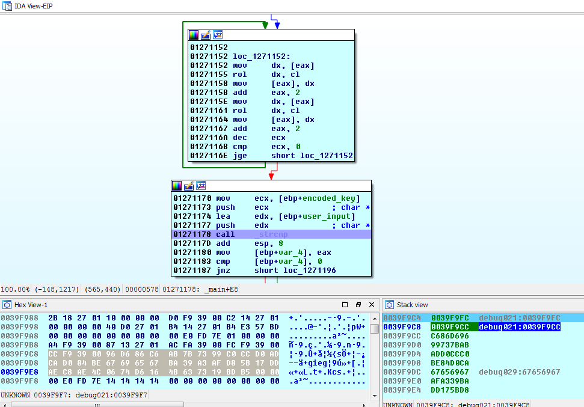

Dakotacon 2015 RE Challenge C2 Writeup
The Dakotacon C2 challenge was moderately difficult in that it actually required you to do a little programming work -- most of the other C-based challenges in this CTF allowed you to set a breakpoint at a smart place (e.g. right before strcmp()), and view the key in-memory.
Instead of comparing your input with the actual key, this binary encodes your input and compares it with an encoded version of the key.
Here is the encoding algorithm, in IDA-assembly, with my psuedocode added as comment on the right:
// i = 0;
.text:0123114D mov ecx, 12 // r = 12;
.text:01231152
.text:01231152 loc_1231152: // loop: ; CODE XREF: _main+DEj
.text:01231152 mov dx, [eax] // tmp = input[i];
.text:01231155 rol dx, cl // tmp = tmp << r;
.text:01231158 mov [eax], dx // input[i] = tmp;
.text:0123115B add eax, 2 // i += 2;
.text:0123115E mov dx, [eax] // tmp = input[i];
.text:01231161 rol dx, cl // tmp = tmp << r;
.text:01231164 mov [eax], dx // input[i] = tmp;
.text:01231167 add eax, 2 // i += 2
.text:0123116A dec ecx // r--;
.text:0123116B cmp ecx, 0 // while (r < 0): loop
.text:0123116E jge short loc_1231152
So now we need to figure out the algorithmic inverse. It's not difficult -- all we need to do is change the direction of the rotates from left to right. Let's do it in psuedocode real quick:
i = 0;
r = 12;
loop:
tmp = input[i];
tmp = tmp >> r; // Note the rotate to the right.
input[i] = tmp;
i += 2;
tmp = input[i];
tmp = tmp >> r; // Note the rotate to the right.
input[i] = tmp;
i += 2;
r--
while (r < 0): loop
Let's turn that psuedocode into some actual C code:
for (r = 12; r > 0; r--)
{
memcpy(&tmp, &buf[i], 2);
printf("%x", tmp);
tmp = rotate_right(tmp, r);
memcpy(&buf[i], &tmp, 2);
i += 2;
memcpy(&tmp, &buf[i], 2);
printf("%x\n", tmp);
tmp = rotate_right(tmp, r);
memcpy(&buf[i], &tmp, 2);
i += 2;
}
Now all we need is the encoded key from the program, so we can run it through that decode loop. One way to get that encoded key is simply to set a breakpoint on the strncmp() at address 0x01231178, which is the check for the correct key. The first argument pushed onto the stack is a pointer to the encoded key -- you can verify this by looking a few dozen instructions earlier, where you'll see the arguments being set up/pushed onto the stack. If you're following along in IDA, you should see something like this:

Note the highlighted bytes in the lower-left-hand panel. That's the encoded key, and what we want... those bytes were pushed onto the stack earlier in the program.
If we copy/paste those into our program, and we can take a shot at decoding them!
Here's the complete decoder I wrote to solve this challenge.